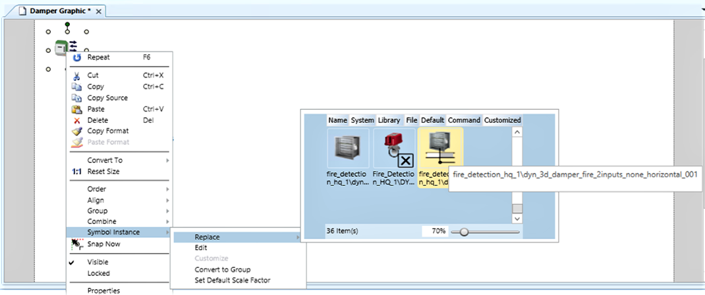
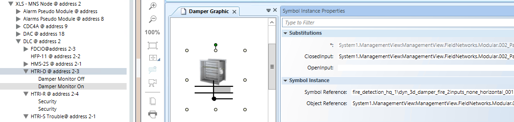

Configuring Multi-input Damper Symbols in Graphics
Scenario
You want to configure a symbol representing a damper with open- and closed-limit inputs from HTRI-D/XTRI-D (two-input devices), FDCIO A (two-input device), or FDCIO B (four-input device).
NOTE: Two single-input HTRI-M/S/R or XTRI-M/S/R devices may also be used for representing the open/closed conditions in the damper symbol, but only one general device status can be represented by the symbol. In this case, you can add another symbol to represent the second device.
- You opened a graphic in edit or engineering mode.
- In the Graphic Editor, open the Properties pane.
- In System Browser, select the Manual Navigation check box.
- Select Management View.
- In Field Networks, locate and drag the input device into the graphic.
- The default symbol appears in the graphic.
- Right-click the default symbol and select Symbol Instance > Replace.
- In the list of associated symbols, select the damper symbol.
NOTE: Use the zoom cursor at the bottom to enlarge the view of the symbols. You can alternatively select the symbol with the technical address.
- The 2-input symbol appears in the graphic.
- Right-click the 2-input symbol and select 1.1 Reset Size to adjust shape proportions.
- Click the 2-input symbol and open the Symbol Instance Properties expander of the Graphic Editor.
- In System Browser, expand the input device subtree.
- Drag the closed status input to the ClosedInput property.
- Drag the open status input into the OpenInput property.

NOTE: If two single-input devices are used for a damper, proceed as follows: - In step 3, drag the first device into the graphic, replace the symbol as described, and drag the first input into the corresponding property.
- In step 9, from the second device, drag the second input into the corresponding property.
- In addition, drag the second device into the graphic. The default symbol can represent the status of the device.
- Repeat this procedure from step 3 for other dampers as necessary.
NOTE: If a four-input device is used for two dampers, reapply the same procedure using the second pair of inputs. - Save the graphic.
- In System Browser, deselect the Manual Navigation check box.